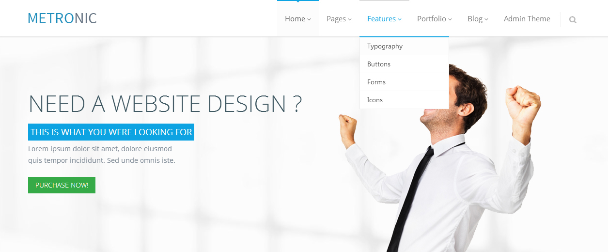

6. Main Menu
To topTop menu enables an easy access to most frequently accessed information and pages.
Top Menu Dropdown Options
<!-- BEGIN TOP NAVIGATION MENU -->
<div class="navbar-collapse collapse">
<ul class="nav navbar-nav">
<li class="dropdown active">
<a class="dropdown-toggle" data-toggle="dropdown" data-hover="dropdown" data-delay="0" data-close-others="false" href="#">
Home
<i class="icon-angle-down"></i>
</a>
<ul class="dropdown-menu">
<li class="active"><a href="index.html">Home Default</a></li>
<li><a href="page_home2.html">Home with Top Bar</a></li>
</ul>
</li>
<li class="dropdown">
<a class="dropdown-toggle" data-toggle="dropdown" data-hover="dropdown" data-delay="0" data-close-others="false" href="#">
Pages
<i class="icon-angle-down"></i>
</a>
<ul class="dropdown-menu">
<li><a href="page_about.html">About Us</a></li>
<li><a href="page_services.html">Services</a></li>
<li><a href="page_prices.html">Prices</a></li>
<li><a href="page_contacts.html">Contact</a></li>
</ul>
</li>
<li class="dropdown">
<a class="dropdown-toggle" data-toggle="dropdown" data-hover="dropdown" data-delay="0" data-close-others="false" href="#">
Features
<i class="icon-angle-down"></i>
</a>
<ul class="dropdown-menu">
<li><a href="feature_typography.html">Typography</a></li>
<li><a href="feature_buttons.html">Buttons</a></li>
<li><a href="feature_forms.html">Forms</a></li>
<li><a href="feature_icons.html">Icons</a></li>
</ul>
</li>
<li class="dropdown">
<a class="dropdown-toggle" data-toggle="dropdown" data-hover="dropdown" data-delay="0" data-close-others="false" href="#">
Portfolio
<i class="icon-angle-down"></i>
</a>
<ul class="dropdown-menu">
<li><a href="portfolio_4.html">Portfolio 4</a></li>
<li><a href="portfolio_3.html">Portfolio 3</a></li>
<li><a href="portfolio_2.html">Portfolio 2</a></li>
<li><a href="portfolio_item.html">Portfolio Item</a></li>
</ul>
</li>
<li class="dropdown">
<a class="dropdown-toggle" data-toggle="dropdown" data-hover="dropdown" data-delay="0" data-close-others="false" href="#">
Blog
<i class="icon-angle-down"></i>
</a>
<ul class="dropdown-menu">
<li><a href="blog.html">Blog Page</a></li>
<li><a href="blog_item.html">Blog Item</a></li>
</ul>
</li>
<li><a href="http://www.keenthemes.com/preview/index.php?theme=metronic_admin&page=index.html" target="_blank">Admin Theme</a></li>
<li class="menu-search">
<span class="sep"></span>
<i class="icon-search search-btn"></i>
<div class="search-box">
<div class="input-group">
<form>
<input style="background:#fff;" class="input-sm m-wrap form-control" type="text" placeholder="Search" />
<button type="submit" class="btn theme-btn">Go</button>
</form>
</div>
</div>
</li>
</ul>
</div>
<!-- BEGIN TOP NAVIGATION MENU -->